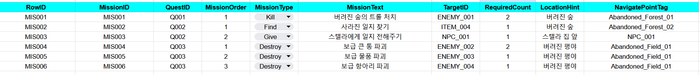
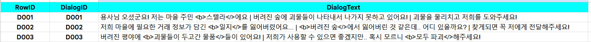
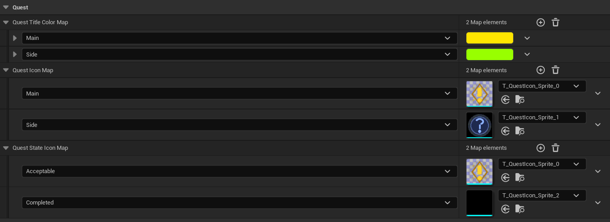

CONTENTS
프로젝트 개요
MMORPG 퀘스트 시스템
UE5와 C++ IOCP 서버를 연동한 MMORPG 퀘스트 시스템
(클라이언트) 프로젝트입니다.
QuestManageSubSystem 클래스를 중심으로 설계하여 서버
패킷을 수신해,
Delegate 기반의 이벤트를 브로드캐스팅합니다.
퀘스트 저널, 퀘스트 트래커, NPC 다이얼로그 및 헤드 아이콘 UI 시스템과 연동되어 작동합니다.
결과
주요 구현 흐름
- 서버로부터 수신된 패킷을 기반으로 한 4단계 처리 프로세스
- 기획 데이터 시트(CSV/Excel)의 DataTable/DataAsset 변환
- 런타임 퀘스트 인스턴스 생성 및 델리게이트를 이용한 UI 및 게임 플레이 로직 연동
1. 서버 권위 기반의 런타임 데이터 동기화 및 캐싱
서버 책임 (데이터)
- 퀘스트 수락/진행/완료 상태
- 각 미션의 CurrentCount, RequiredCount, bClear 등 진행도
- 어떤 퀘스트가 수락 가능/완료 가능 인지 (NPC별 가능한 퀘스트 목록)
- 퀘스트 추적 여부(bIsTracking)의 최종 상태
- 재접속/로그인 시, 현재 퀘스트 전체 상태 제공
클라이언트 책임 (표현 + 런타임 캐시 데이터)
퀘스트 인스턴스 런타임 캐싱
- ActiveQuests에 현재 진행 중인 퀘스트들의 FQuestInstance 보관
- 각 FQuestInstance 안에 MissionInstances, RewardInstances 등 미션/보상 인스턴스 캐싱
NPC별 상호작용 가능 퀘스트 캐싱
- NpcToAcceptableQuestsMap, NpcToACompletableQuestsMap 으로
”이 NPC에게 어떤 퀘스트를 수락/완료할 수 있는지”를 조회용으로 유지
UI/표현 상태
- TrackingQuestIDs (어떤 퀘스트를 추적 중인지)
- 퀘스트 트래커/저널/NPC 헤드 아이콘 위젯의 열림/선택/스크롤 등 순수 UI 상태
위 값들은 모두 서버에서 내려준 패킷을 기반으로 재구성하며,
퀘스트 완료 여부, 미션 달성 여부 자체의 판정은 항상 서버가 최종 권위를 가집니다.
2. 재접속/로그인 시 퀘스트 상태 복원 플로우

- 클라이언트가 로그인/재접속을 완료하면, 서버는 퀘스트 전체 상태를 담은 SC_QUEST_INITIAL 패킷을 전송합니다.
-
클라이언트는 이 패킷들을 타입별 큐에 적재하고,
UQuestManageSubSystem::Tick()에서 순차 처리하면서 ActiveQuests, NpcToAcceptableQuestsMap, TrackingQuestIDs 등을 재구성합니다. - 마지막으로 OnQuestInitialized, OnQuestStarted, OnQuestUpdated 같은 델리게이트를 브로드캐스트해서 QuestTracker / QuestJournal / NPC 아이콘 UI 가 한 번에 현재 서버 상태와 동기화되도록 합니다.
3. 서버 패킷 & ID 매핑 구조
패킷에서는 숫자 ID만 오지만, 파싱 시점에 유틸 함수를 통해 클라이언트 내부 ID 타입(FName)으로 변환하여 매핑합니다.
ID 체계 차이
- 서버: QuestID, MissionID, NpcID를 모두
int32ID로 관리 - 클라이언트: 기획 DataTable / DataAsset이 Q001, MIS001 같은 문자열 ID를
FName키로 사용
ID 변환 유틸 함수 예시
int32 → FName (Quest) : IntToQuestID(1) == "Q001"
int32 → FName (Mission) : IntToMissionID(1) == "MIS001"
int32 → FName (NPC) : UNPCManageSubSystem::IntToNpcID() 등
패킷 파싱 & 큐 적재 예시
Dispatcher->RegisterHandler(EPacketType::SC_QUEST_START, [this](const TArray<uint8>& RawData) { PKT_SC_QUEST_START* Pkt = (PKT_SC_QUEST_START*)RawData.GetData(); FQuestStartPacketData PacketData; PacketData.QuestID = Pkt->QuestID; // int32 PacketData.NpcID = Pkt->NpcID; // int32 PacketData.bHasTimeLimit = Pkt->HasTimeLimit; PacketData.TimeLimitSeconds = Pkt->TimeLimitSeconds; PacketData.bIsTracking = Pkt->bIsTracking; for (int32 i = 0; i < Pkt->MissionCount; ++i) { FMissionInfo MissionData; // 여기서 FName 변환 수행 MissionData.MissionID = IntToMissionID(Pkt->Missions[i].MissionID); MissionData.CurrentCount = Pkt->Missions[i].CurrentCount; MissionData.RequiredCount = Pkt->Missions[i].RequiredCount; PacketData.Missions.Add(MissionData); } QuestStartQueue.Enqueue(PacketData); });
4. 기본 퀘스트 진행 플로우
1-1. 큐와 델리게이트 기반의 상태 동기화
서버에서 받은 패킷을 즉시 처리하지 않고 타입별 큐(QuestInitialQueue, QuestStartQueue 등)에 적재한 뒤,
UQuestManageSubSystem::Tick()에서 순차적으로 처리합니다.
[이벤트 기반의 퀘스트 상태 동기화 파이프라인]
상태 갱신 완료 후 OnQuestStarted, OnQuestUpdated와 같은 델리게이트를 브로드캐스트하여,
QuestTracker / QuestJournal / NPC Icon UI가 서버 상태와 실시간으로 동기화되도록 구현했습니다.
1-2. 패킷 ID 변환 및 큐 적재 (Dispatcher)
서버의 int32 ID를 클라이언트 기획 데이터인 FName(Q001, MIS001 등) 체계로 변환하여 큐에 적재합니다.
Dispatcher->RegisterHandler(EPacketType::SC_QUEST_START, [this](const TArray<uint8>& RawData) { // 1. 수신된 Raw 데이터를 패킷 구조체로 역직렬화 PKT_SC_QUEST_START* Pkt = (PKT_SC_QUEST_START*)RawData.GetData(); // 2. 클라이언트 내부 통신용 구조체(FQuestStartPacketData) 생성 및 기본 정보 복사 FQuestStartPacketData PacketData; PacketData.QuestID = Pkt->QuestID; PacketData.NpcID = Pkt->NpcID; PacketData.bHasTimeLimit = Pkt->HasTimeLimit; PacketData.TimeLimitSeconds = Pkt->TimeLimitSeconds; PacketData.bIsTracking = Pkt->bIsTracking; // 3. 미션 목록 가공: 서버 ID(int32)를 클라이언트 ID(FName)로 변환하며 리스트화 for (int32 i = 0; i < Pkt->MissionCount; ++i) { FMissionInfo MissionData; // 유틸 함수를 사용해 서버 ID를 기획 데이터 키(FName)로 매핑 MissionData.MissionID = IntToMissionID(Pkt->Missions[i].MissionID); MissionData.CurrentCount = Pkt->Missions[i].CurrentCount; MissionData.RequiredCount = Pkt->Missions[i].RequiredCount; PacketData.Missions.Add(MissionData); } // 4. 가공 완료된 데이터를 퀘스트 전용 처리 큐에 적재 QuestStartQueue.Enqueue(PacketData); });
1-3. Tick 기반 데이터 갱신 및 브로드캐스트
게임 스레드의 Tick에서 큐에 쌓인 데이터를 소비하며 실제 런타임 인스턴스를 생성하고 UI에 이벤트를 전파합니다.
Quest Instance 생성 및 초기화 로직
서버에서 전달받은 FQuestStartPacketData를 바탕으로 클라이언트 런타임 객체인 FQuestInstance를 생성합니다.
이 과정에서 정적 데이터(DataTable)와 서버의 동적 데이터를 결합하여 최종적인 퀘스트 상태를 구성합니다.
void UQuestManageSubSystem::HandleQuestStart(const FQuestStartPacketData& ReceivedData) { // 1. 새로운 퀘스트 인스턴스 생성 및 ID 변환 (int32 -> FName) FQuestInstance NewQuest; NewQuest.QuestID = IntToQuestID(ReceivedData.QuestID); NewQuest.NpcID = UNPCManageSubSystem::IntToNpcID(ReceivedData.NpcID); // 2. 클라이언트 DataTable에서 정적 기획 데이터 조회 const FQuestRow* LocalQuestData = GetQuestData(NewQuest.QuestID); if (!LocalQuestData) return; // 3. 서버에서 보내준 각 미션 진행 상태(Raw Data)를 미션 인스턴스로 변환 for (const auto& ServerMission : ReceivedData.Missions) { FMissionInstance NewMission; NewMission.MissionID = ServerMission.MissionID; NewMission.CurrentCount = ServerMission.CurrentCount; NewMission.RequiredCount = ServerMission.RequiredCount; // 퀘스트 인스턴스 내 미션 맵에 추가 NewQuest.MissionInstances.Add(ServerMission.MissionID, NewMission); } // 4. 활성화된 퀘스트 목록(ActiveQuests)에 캐싱 ActiveQuests.Add(NewQuest.QuestID, NewQuest); // 5. 퀘스트 추적(Tracking) 설정 처리 if (ReceivedData.bIsTracking) { TrackingQuestIDs.Add(NewQuest.QuestID); OnQuestTrackingChanged.Broadcast(NewQuest.QuestID, true); } // 6. UI 및 게임 로직에 퀘스트 시작 알림 (Delegate) OnQuestStarted.Broadcast(NewQuest.QuestID); }
5. 기획 데이터의 에셋화 흐름
2-1. DataTable과 DataAsset 활용
- DataTable (정적 데이터): 퀘스트 정보, 미션 수치, 보상 ID, NPC 대사, 아이템 기본 정보 등 텍스트와 수치 데이터를 관리합니다.
- DataAsset (비주얼 리소스): NPC 상태별 아이콘, 아이템 아이콘, 퀘스트 등급별 UI 비주얼 에셋 등 실제 리소스(Texture, Material)와 데이터를 매핑합니다.
2-2. 서브시스템 기반 데이터 액세스
데이터들은 UI에서 직접 접근하지 않고, 각 담당 서브시스템 클래스를 이용해 값을 가져옵니다.

void UQuestTrackerItemWidget::InitQuestItem(FName InQuestID) { if (const auto Icon = QuestManageSubSystem->GetQuestIcon(QuestData->Type)) { Image_QuestIcon->SetBrushFromAtlasInterface(Icon); } } UPaperSprite* UQuestManageSubSystem::GetQuestIcon(EUEQuestType InQuestType) const { if (!CachedNPCVisualDataAsset) return nullptr; auto IconPtr = CachedNPCVisualDataAsset->QuestIconMap.FindRef(InQuestType); return IconPtr.IsValid() ? IconPtr.Get() : IconPtr.LoadSynchronous(); }
2-3. ID 기반 데이터/에셋 매핑
DataTable과 DataAsset은 ID를 통해 접근하며, 직접 ID와 리소스를 매핑하여 관리합니다.
[Quest 시트]

[Mission 시트]

[Dialog 시트]
DataAsset 도 ID 를 통해 데이터에 접근하며, 직접 ID 와 리소스를 매핑해줘야 합니다.
[DA_NPCIcon]
[DA_QuestVisualConfig]
2-3-1. 텍스쳐 아틀라스를 이용한 메모리 및 로딩 최적화
[다양한 퀘스트 아이콘을 하나의 아틀라스로 관리하는 예시]
수많은 퀘스트 아이콘과 UI 리소스를 개별 텍스쳐로 관리할 경우 발생하는 잦은 메모리 로드 및 드로우 콜 낭비를 방지하기 위해 텍스쳐 아틀라스를 활용했습니다.
하나의 큰 텍스쳐 시트 안에 여러 아이콘을 통합하고, 데이터 에셋에서 각 ID에 맞는 Sprite 정보를 매핑했습니다.
2-4. RPGDataSettings를 통한 통합 관리
DT와 DA들은 RPGDataSettings (UDeveloperSettings 상속)에서 관리합니다.
서브 시스템들은 URPGDataSettings::Get()을 통해 필요한 테이블과 에셋을 가져와 사용하며, 빌드 환경에 따라 코드 수정 없이 설정 교체가 가능합니다.
2-5. DT/DA/Texture 사전 로딩 및 캐싱 전략
자주 사용하는 정적 데이터와 비주얼 리소스는 서브시스템의 Initialize 시점에 미리 로드하여 캐싱해둡니다.
이후 제공되는 헬퍼 함수들은 미리 로드된 메모리 상의 값을 즉시 반환합니다.
void UNPCStatusWidget::UpdateStatus(EUEQuestState State) { UQuestManageSubSystem* QuestManager = GetGameInstance()->GetSubsystem<UQuestManageSubSystem>(); if (!QuestManager) return ; if (State != EUEQuestState::None) { Image_QuestIcon->SetVisibility(ESlateVisibility::Visible); auto Icon = QuestManager->GetQuestStateIcon(State); Image_QuestIcon->SetBrushFromAtlasInterface(Icon); } else { Image_QuestIcon->SetVisibility(ESlateVisibility::Collapsed); } } class UPaperSprite* UQuestManageSubSystem::GetQuestStateIcon(EUEQuestState State) { if (!CachedNPCVisualDataAsset) return nullptr; auto Icon = CachedNPCVisualDataAsset->QuestStateIconMap.FindRef(State); return Icon.IsValid() ? Icon.Get() : Icon.LoadSynchronous(); }
6. QuestTracker UI
퀘스트 트래커는 현재 트래킹 중인 퀘스트들의 요약 정보와 미션 진행도를 보여주는 UI입니다.
서버에서 퀘스트 상태가 바뀌면 델리게이트로 트래커 아이템 / 미션 위젯 / 네비게이션 버튼이 순차적으로 갱신됩니다.
[게임 내 퀘스트 트래커 및 미션 리스트 UI 구성]
UI는 퀘스트 ID만 넘겨받으며, 텍스트·색상·아이콘·네비게이션 위치 등은 퀘스트 서브 시스템을 통해 조회해 구성합니다.
3-1. 트래커 아이템 초기화: 데이터 조회 + 비주얼 세팅
QuestID를 기반으로 ActiveQuests의 런타임 상태와 DataTable의 정적 데이터를 조합하여 진행도와 메타 정보를 구성합니다.
void UQuestTrackerItemWidget::InitQuestItem(FName InQuestID) { QuestID = InQuestID; QuestManager = GetGameInstance()->GetSubsystem<UQuestManageSubSystem>(); if (!QuestManager) return; const FQuestRow* QuestData = QuestManager->GetQuestData(QuestID); if (!QuestData) return; QuestType = QuestData->Type; // 서브시스템을 통한 비주얼 설정 조회 FColor QuestColor = QuestManager->GetQuestTitleColor(QuestData->Type); TextBlock_QuestName->SetText(QuestData->Title); TextBlock_QuestName->SetColorAndOpacity(QuestColor); if (const auto Icon = QuestManager->GetQuestIcon(QuestData->Type)) { Image_QuestIcon->SetBrushFromAtlasInterface(Icon); } const FQuestInstance* QuestInstance = QuestManager->GetActiveQuest(QuestID); if (!QuestInstance) return; for (const auto& Mission: QuestInstance->MissionInstances) { AddMissionWidget(Mission.Key); } }
3-2. 미션 위젯 생성: 타입별 동적 위젯 바인딩
미션의 종류(수집, 처치 등)에 따라 필요한 UI 형태가 다를 수 있으므로, DataAsset의 매핑 정보를 참조하여 적절한 위젯 클래스를 동적으로 생성합니다.
void UQuestTrackerItemWidget::AddMissionWidget(FName MissionID) { if (MissionWidgets.Contains(MissionID)) return; const FMissionRow* MissionData = QuestManager->GetMissionData(MissionID); if (!MissionData || !VerticalBox_MissionList) return; // 미션 타입에 매핑된 위젯 생성 UMissionBaseWidget* MissionWidget = UMissionBaseWidget::CreateMissionWidget(this, MissionData->MissionType, MissionID); if (MissionWidget) { VerticalBox_MissionList->AddChildToVerticalBox(MissionWidget); MissionWidgets.Add(MissionID, MissionWidget); } }
3-3. 네비게이션 시스템: 미션 타겟 추적
현재 완료되지 않은 미션 중 가장 우선순위가 높은 타겟을 찾아 월드 네비게이션 포인트를 표시합니다.
void UQuestTrackerItemWidget::OnNavigateButtonClicked() { if (!QuestManager) return; const FQuestInstance* QuestInstance = QuestManager->GetActiveQuest(QuestID); if (!QuestInstance || QuestInstance->MissionInstances.Num() == 0) return; for(const auto& Pair : QuestInstance->MissionInstances) { const FMissionRow* MData = QuestManager->GetMissionData(Pair.Key); // 미달성 미션 중 네비게이션 데이터가 있는 경우 수행 if(MData && Pair.Value.CurrentCount < Pair.Value.RequiredCount) { auto NavigatePointActor = QuestManager->GetQuestNavigatePointForID(MData->NavigatePointTag); if (NavigatePointActor) { QuestManager->NavigateToQuestPoint(MData->NavigatePointTag, MData->LocationHint, GetOwningPlayer()); } break; } } }
네비게이션 액터인 BP_QuestNavigatePoint는 레벨 배치 시 자신의 TargetTag를 서브시스템에 등록하여, 언제든 액터 포인터를 찾아낼 수 있게 설계되었습니다.
[레벨 내 배치된 네비게이션 타겟 포인트]
7. QuestJournal UI
퀘스트 저널은 현재 진행 중인 퀘스트들을 카테고리(지역)별로 정리하고, 선택한 퀘스트의 상세 설명, 미션 목록, 보상을 보여주는 메인 UI입니다.
리스트, 카테고리, 상세 패널은 모두 퀘스트 서브시스템을 통해 데이터를 조회하며, OnQuestStarted 등의 델리게이트를 구독하여 서버 상태와 실시간으로 동기화됩니다.
4-1. 루트 저널 위젯: 델리게이트 구독 및 패널 연결
void UQuestJournalWidget::NativeConstruct() { Super::NativeConstruct(); QuestManager = GetGameInstance()->GetSubsystem<UQuestManageSubSystem>(); // 서브시스템의 상태 변화 델리게이트 구독 QuestManager->OnQuestStarted.AddDynamic(this, &UQuestJournalWidget::OnQuestStarted); QuestManager->OnQuestUpdated.AddDynamic(this, &UQuestJournalWidget::OnQuestUpdated); QuestManager->OnQuestCompleted.AddDynamic(this, &UQuestJournalWidget::OnQuestCompleted); if (QuestJournal_List) { QuestJournal_List->OnQuestSelected.AddDynamic(this, &UQuestJournalWidget::OnQuestSelected); } }
4-2. 카테고리별 리스트 구성 (Region 기반 그룹핑)
리스트 위젯은 QuestID로 정적 데이터를 조회하여 Region(지역) 정보를 얻고, 이를 기준으로 카테고리를 동적 생성하거나 기존 카테고리에 아이템을 분류합니다.
void UQuestJournalListWidget::AddQuest(FName QuestID) { const FQuestRow* QuestRow = QuestManager->GetQuestData(QuestID); if (!QuestRow) return; // 지역별 카테고리 맵핑 및 동적 위젯 생성 if (CategoryMap.Contains(QuestRow->Region)) { CategoryMap[QuestRow->Region]->AddCategoryItem(QuestID); } else { auto NewCategory = CreateWidget<UQuestJournalListCategoryWidget>(this, CategoryClass); NewCategory->Setup(QuestID, OnQuestSelected); CategoryMap.Add(QuestRow->Region, NewCategory); VerticalBox_CategoryBox->AddChild(NewCategory); } SortQuestItems(); // 기획 데이터의 정렬 순서 적용 }
4-3. 상세 패널: 정적 데이터와 런타임 상태의 결합
상세 패널은 DataTable의 데이터와 ActiveQuests의 진행도 정보를 실시간으로 조합하여 출력합니다.
void UQuestJournalDetailWidget::ShowDetail(FName QuestID) { if (CurrentQuestID == QuestID) return; auto* QuestManager = GetGameInstance()->GetSubsystem<UQuestManageSubSystem>(); if (!QuestManager) return; // 1. 정적 기획 데이터(DataTable) 조회 const FQuestRow* SelectedQuestData = QuestManager->GetQuestData(QuestID); if (!SelectedQuestData) return; CurrentQuestID = QuestID; // 2. 기본 정보 갱신 (아이콘, 타이틀, 설명) if (const auto Icon = QuestManager->GetQuestIcon(SelectedQuestData->Type)) { Image_QuestIcon->SetVisibility(ESlateVisibility::Visible); Image_QuestIcon->SetBrushFromAtlasInterface(Icon); } TextBlock_QuestTitle->SetText(SelectedQuestData->Title); TextBlock_QuestDescription->SetText(SelectedQuestData->Description); // 3. 기존 리스트 클리어 VerticalBox_MissionContainer->ClearChildren(); HorizontalBox_RewardBox->ClearChildren(); // 4. 서버로부터 동기화된 런타임 인스턴스 정보 조회 const FQuestInstance* ActiveQuest = QuestManager->GetActiveQuest(QuestID); if (!ActiveQuest) return; // 5. 미션 위젯 동적 생성 및 진행도 반영 for (const auto& MissionPair : ActiveQuest->MissionInstances) { if (UJournalMissionWidget* MissionWidget = CreateWidget<UJournalMissionWidget>(this, MissionWidgetClass)) { // 정적 미션 데이터 + 서버의 진행 수치 전달 const FMissionRow* MData = QuestManager->GetMissionData(MissionPair.Key); MissionWidget->InitMission(MData, MissionPair.Value.CurrentCount, MissionPair.Value.RequiredCount); VerticalBox_MissionContainer->AddChildToVerticalBox(MissionWidget); } } // 6. 보상 정보 구성 TArray<FQuestRewardInfo> Rewards = QuestManager->GetQuestRewardInfo(QuestID); for (const FQuestRewardInfo& Reward : Rewards) { if (UQuestRewardItemWidget* RewardWidget = CreateWidget<UQuestRewardItemWidget>(this, RewardWidgetClass)) { RewardWidget->SetReward(Reward); HorizontalBox_RewardBox->AddChildToHorizontalBox(RewardWidget); } } }
4-4. 퀘스트 트래킹 상태 변경 (서버 ↔ 클라이언트 플로우)
체크박스를 통한 트래킹 요청 시, 클라이언트가 즉시 UI를 변경하지 않고 서버의 판단을 기다립니다. 서버에서 트래킹 가능 여부를 판단해 패킷을 보내면, 서브시스템의 델리게이트를 통해 저널 아이콘과 트래커 리스트가 동시에 동기화됩니다.
1) 저널 아이템 위젯: 체크박스 바인딩 및 동기화
void UQuestJournalListCategoryItemWidget::SetupItem(FName QuestID) { // 1. 초기 트래킹 상태 설정 bool bIsCurrentlyTracking = QuestManager->IsQuestTracking(QuestID); CheckBox_IsTracking->SetCheckedState(bIsCurrentlyTracking ? ECheckBoxState::Checked : ECheckBoxState::Unchecked); // 2. 사용자의 체크 조작 이벤트 바인딩 CheckBox_IsTracking->OnCheckStateChanged.AddDynamic(this, &UQuestJournalListCategoryItemWidget::OnTrackingStateChanged); // 3. 서버 응답 시 UI를 갱신해줄 델리게이트 구독 if (auto QM = GetGameInstance()->GetSubsystem<UQuestManageSubSystem>()) { QM->OnQuestTrackingChanged.AddDynamic(this, &UQuestJournalListCategoryItemWidget::SyncTrackingState); } } // [클라이언트 -> 서버 요청] void UQuestJournalListCategoryItemWidget::OnTrackingStateChanged(bool bIsChecked) { // 서버에 트래킹 상태 변경 패킷 요청 전송 QuestManager->SetQuestTracking(TargetQuestID, bIsChecked); } // [서버 패킷 도착 -> UI 갱신] void UQuestJournalListCategoryItemWidget::SyncTrackingState(FName QuestID, bool bIsTracking) { if (QuestID == TargetQuestID) { CheckBox_IsTracking->SetCheckedState(bIsTracking ? ECheckBoxState::Checked : ECheckBoxState::Unchecked); } }
2) 퀘스트 트래커(HUD): 실시간 리스트 갱신
저널뿐만 아니라 HUD에 항상 떠있는 QuestTracker 위젯도 동일한 델리게이트를 통해 리스트를 즉시 업데이트합니다.
void UQuestTrackerWidget::OnQuestTracking(FName QuestID, bool bIsTracking) { if (bIsTracking) { AddQuestItem(QuestID); // 트래커 리스트에 추가 } else { RemoveQuestItem(QuestID); // 트래커 리스트에서 제거 } SortQuestItems(); // 트래킹 순서에 따른 리스트 재정렬 }
8. NPC 헤드 아이콘 시스템
NPC 머리 위에는 해당 NPC와 연관된 퀘스트 상태(수락 가능 / 완료 가능)를 표시하는 아이콘이 출력됩니다.
서버 패킷을 바탕으로 QuestManageSubSystem이 관리하는 상태 맵을 조회하여, 현재 NPC가 가져야 할 가장 우선순위가 높은 아이콘을 동적으로 결정합니다.
[퀘스트 상태에 따른 NPC 헤드 UI 변화]
5-1. 상태 결정 로직
한 NPC가 여러 퀘스트를 가질 수 있으므로, '완료 가능' 상태를 '수락 가능'보다 우선하여 표시하도록 설계했습니다.
서버에서 받은 패킷을 바탕으로, 퀘스트 서브 시스템이 NpcToAcceptableQuestsMap, NpcToACompletableQuestsMap 을 업데이트합니다.
EUEQuestState UQuestManageSubSystem::GetBestQuestStateForNPC(FName NpcID) { // 1순위: 완료 가능한 퀘스트가 있는지 확인 if (NpcToACompletableQuestsMap.Contains(NpcID)) { return EUEQuestState::Completed; } // 2순위: 수락 가능한 퀘스트가 있는지 확인 if (NpcToAcceptableQuestsMap.Contains(NpcID)) { return EUEQuestState::Acceptable; } return EUEQuestState::None; }
5-2. NPC 액터: 이벤트 구독 및 상태 갱신
NPC 액터는 퀘스트 시스템의 다양한 이벤트를 구독하며, 상태 변경이 감지될 때마다 RefreshQuestIcon()을 호출하여 자신의 헤드 UI를 동기화합니다.
void ANPCBase::RefreshQuestIcon() { if (auto* QM = GetQuestManager()) { // 최우선 상태를 계산하여 위젯 갱신 EUEQuestState BestState = QM->GetBestQuestStateForNPC(NpcID); StatusWidget->UpdateStatus(BestState); } }
5-3. 헤드 UI 위젯: 데이터 에셋 기반 비주얼라이징
UI 위젯은 오직 서브시스템이 DataAsset(DA)으로부터 가져온 리소스를 화면에 그리는 역할만 수행합니다.
void UNPCStatusWidget::UpdateStatus(EUEQuestState State) { if (State != EUEQuestState::None) { Image_QuestIcon->SetVisibility(ESlateVisibility::Visible); // 서브시스템을 통해 캐싱된 데이터 에셋의 아이콘 로드 auto Icon = QuestManager->GetQuestStateIcon(State); Image_QuestIcon->SetBrushFromAtlasInterface(Icon); } else { Image_QuestIcon->SetVisibility(ESlateVisibility::Collapsed); } } // [Subsystem] 데이터 에셋으로부터 스프라이트 조회 UPaperSprite* UQuestManageSubSystem::GetQuestStateIcon(EUEQuestState State) { if (!CachedNPCVisualDataAsset) return nullptr; auto Icon = CachedNPCVisualDataAsset->QuestStateIconMap.FindRef(State); return Icon.IsValid() ? Icon.Get() : Icon.LoadSynchronous(); }
9. 현지화(Localization) 시스템
글로벌 서비스를 고려하여 게임 내 모든 텍스트 리소스를 언리얼 엔진의 현지화 시스템에 대응하도록 설계했습니다.
6-1. FText 기반 설계 및 현지화
[로컬라이제이션 대시보드를 통한 텍스트 수집 및 관리]
사용자에게 노출되는 대사 및 UI 텍스트에 FText 타입을 사용해 현지화가 되도록 했습니다.
- 자동 수집 대상: C++ 소스 코드, DataTable, DataAsset, UI 위젯 등
// 1. NPC 상호작용 데이터: NPC 이름 및 기본 대사 USTRUCT(BlueprintType) struct RPG_API FNPCInteractionRow : public FTableRowBase { GENERATED_BODY() public: UPROPERTY(EditAnywhere, BlueprintReadWrite) FName NPCID; UPROPERTY(EditAnywhere, BlueprintReadWrite) FText NPCName; UPROPERTY(EditAnywhere, BlueprintReadWrite) FText DefaultDialog; }; // 2. NPC 퀘스트 대화 데이터 구조체 USTRUCT(BlueprintType) struct RPG_API FNPCDialogRow : public FTableRowBase { GENERATED_BODY() public: UPROPERTY(EditAnywhere, BlueprintReadWrite) FName DialogID; UPROPERTY(EditAnywhere, BlueprintReadWrite) FText DialogText; };